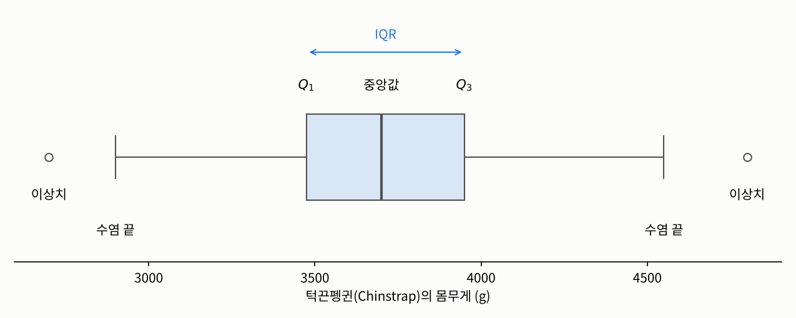
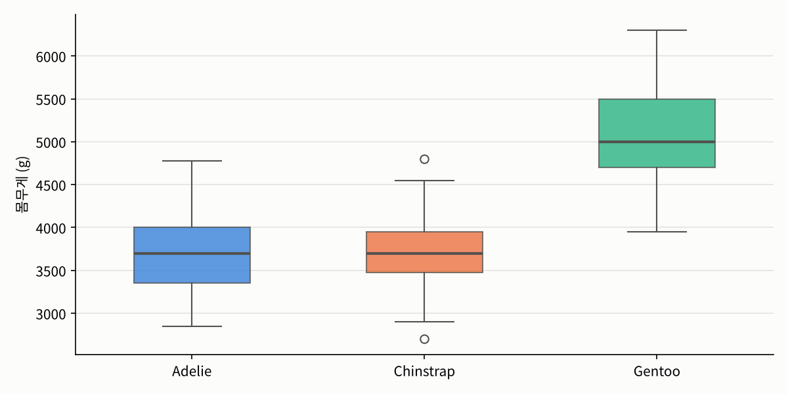

2.5 분위수와 박스 플롯
2장 데이터의 종류와 분포 보기 · 다섯 개의 숫자로 분포 그리기
들어가며
지난 글에서는 경험적 분포함수를 거꾸로 읽는 경험적 분위수 함수 \(F_n^{-1}(p) = x_{(\lceil np \rceil)}\)를 정의했습니다. 그리고 “데이터의 \(100p\%\)가 이 값 이하”라고 말할 수 있는 값이 여러 개일 때가 있다는 것도 보았습니다.
이번 글에서는 이 문제를 정면으로 다룹니다. 먼저 분위수를 정의하고 그것이 하나로 정해지지 않는 경우를 정확히 정리한 뒤, 하나로 정하는 관례와 소프트웨어마다 값이 다른 이유를 살펴봅니다. 그다음 가장 중요한 분위수인 사분위수와 중앙값으로 분포를 다섯 개의 숫자로 요약하고, 이를 그림으로 나타낸 박스 플롯으로 여러 집단을 비교해 보겠습니다.
가운데 값이 둘일 때
박종우, 김찬호, 손인욱, 장지환 네 사람이 한 달 동안 읽은 책의 수가 각각 9, 2, 5, 3권이라고 해 보겠습니다. 줄 세우면 \(2, 3, 5, 9\)입니다. 이 네 사람이 읽은 책 수의 “가운데 값”은 무엇일까요?
가운데 값을 “절반이 그 값 이하이고 절반이 그 값 이상인 값”이라고 생각하면, 3도 그렇고 5도 그렇습니다. 사실 3과 5 사이의 어떤 수, 예를 들어 4나 3.7도 이 조건을 만족합니다. 두 사람은 그 값 이하이고 두 사람은 그 값 이상이니까요. 데이터가 짝수 개일 때는 이렇게 가운데 값이 하나로 정해지지 않을 수 있습니다. 이 현상을 일반적인 비율 \(p\)에 대해 정리해 보겠습니다.
분위수와 분위수 구간
두 조건이 함께 있다는 점이 중요합니다. 첫 번째 조건만 있으면 아주 큰 값도 모두 \(p\)-분위수가 되어 버리고, 두 번째 조건만 있으면 아주 작은 값도 모두 \(p\)-분위수가 됩니다. 두 조건이 양쪽에서 조여서, 분위수는 데이터를 대략 \(p : (1-p)\)로 나누는 자리에 놓이게 됩니다.
이 조건을 만족하는 값이 정확히 어디에 있는지는 다음과 같이 정리됩니다.
책 데이터에 적용해 보겠습니다. \(n = 4\)입니다.
- \(p = 0.5\): \(np = 2\)가 정수이므로 중앙값 전체는 \([x_{(2)}, x_{(3)}] = [3, 5]\)입니다. 위에서 직관적으로 본 그대로입니다.
- \(p = 0.25\): \(np = 1\)이므로 \([x_{(1)}, x_{(2)}] = [2, 3]\)입니다.
- \(p = 0.3\): \(np = 1.2\)가 정수가 아니므로 \(x_{(2)} = 3\) 하나뿐입니다.
김찬호의 스팸 데이터(\(n = 30\))에서는 \(p = 0.25\)일 때 \(np = 7.5\)이므로 25% 분위수는 \(x_{(8)} = 1\) 하나이고, \(p = 0.5\)일 때는 \(np = 15\)가 정수지만 \(x_{(15)} = x_{(16)} = 3\)이므로 중앙값도 3 하나로 정해집니다.
지난 글과의 관계도 짚어 두겠습니다. 분위수 구간의 왼쪽 끝 \(x_{(\lceil np \rceil)}\)은 바로 경험적 분위수 함수 \(F_n^{-1}(p)\)입니다. 즉 경험적 분위수 함수는 가능한 \(p\)-분위수 중 가장 작은 것을 고르는 규칙입니다.
하나로 정하기: 관례와 소프트웨어
분위수가 구간으로 주어지면 실제로 쓰기 불편하니, 보통은 그 구간에서 값 하나를 고르는 관례를 정합니다. 대표적인 두 가지는 다음과 같습니다.
- 왼쪽 끝을 고릅니다. 즉 \(F_n^{-1}(p) = x_{(\lceil np \rceil)}\)를 씁니다.
- 가운데를 고릅니다. 즉 분위수 구간이 \([x_{(np)}, x_{(np+1)}]\)이면 \(\frac{1}{2}\big(x_{(np)} + x_{(np+1)}\big)\)을 씁니다.
그런데 통계 소프트웨어마다 쓰는 관례가 다르고, 그 종류도 두세 가지가 아닙니다. 통계 패키지들이 쓰는 표본 분위수의 정의를 정리한 한 논문은 널리 쓰이는 정의만 아홉 가지를 꼽았습니다.1 넘파이의 np.quantile도 method 인자로 이 정의들을 고를 수 있게 해 둡니다. 책 데이터로 세 가지를 비교해 보겠습니다.
import numpy as np
books = np.array([9, 2, 5, 3]) # 네 사람이 한 달 동안 읽은 책의 수
ps = [0.25, 0.5, 0.75]
print("왼쪽 끝 (inverted_cdf) :", np.quantile(books, ps, method="inverted_cdf"))
print("가운데 (averaged_inverted_cdf) :", np.quantile(books, ps, method="averaged_inverted_cdf"))
print("넘파이 기본값 (linear) :", np.quantile(books, ps))왼쪽 끝 (inverted_cdf) : [2 3 5]
가운데 (averaged_inverted_cdf) : [2.5 4. 7. ]
넘파이 기본값 (linear) : [2.75 4. 6. ]같은 데이터의 같은 분위수인데 세 방법이 모두 다른 값을 내놓습니다. 처음 두 줄은 정리 2.5.2의 분위수 구간 \([2, 3]\), \([3, 5]\), \([5, 9]\)에서 각각 왼쪽 끝과 가운데를 고른 것입니다.
세 번째 줄의 넘파이 기본값은 생각이 조금 다릅니다. 이 방법은 순서통계량들을 직선으로 이어 “부드러운” 분위수 함수를 만든 뒤 그 위에서 값을 읽습니다. 그래서 정의 2.5.1을 만족하지 않는 값이 나오기도 합니다. 예를 들어 위 책 데이터의 30% 분위수는 정리 2.5.2에 따라 3 하나뿐이지만, np.quantile(books, 0.3)은 2.9를 돌려줍니다. 틀렸다기보다는 분위수를 다른 방식으로 정의한 것입니다. 판다스, 맷플롯립, R의 quantile 기본값도 이 방식을 씁니다.
이 차이는 데이터가 적을 때 두드러지고, 데이터가 많아지면 이웃한 순서통계량들이 서로 가까워지므로 거의 사라집니다. 그래도 논문이나 보고서에 분위수를 적을 때는 어떤 정의를 썼는지 밝혀 두는 것이 좋고, 다른 소프트웨어로 계산한 결과와 조금 다르더라도 놀랄 필요는 없습니다.
사분위수와 중앙값
여러 분위수 중에서 특히 자주 쓰는 것들에는 이름이 붙어 있습니다.
이 관례에 따르면 중앙값은 익숙한 공식과 일치합니다. \(n\)이 홀수이면 \(n/2\)가 정수가 아니므로 중앙값은 \(x_{((n+1)/2)}\) 하나이고, \(n\)이 짝수이면 분위수 구간 \([x_{(n/2)}, x_{(n/2+1)}]\)의 가운데인 \(\frac{1}{2}\big(x_{(n/2)} + x_{(n/2+1)}\big)\)입니다. 책 데이터의 중앙값은 \((3 + 5)/2 = 4\)권입니다.
사분위수는 데이터를 대략 네 등분합니다. 제1사분위수 아래에 약 25%, 제1사분위수와 중앙값 사이에 약 25%, 이런 식입니다. 그래서 사분위 범위는 가운데 50%의 데이터가 차지하는 폭이고, 데이터가 얼마나 퍼져 있는지를 나타내는 숫자로 쓰입니다. 양 끝의 극단적인 값에 영향을 받지 않는다는 것이 장점인데, 이 점은 3장에서 다른 퍼짐의 척도들과 함께 다시 다룹니다.
순서 척도의 분위수. 분위수는 순서만 있으면 정의할 수 있으므로 순서 척도 데이터에도 쓸 수 있습니다. 다만 순서 척도에서는 두 값의 “가운데”를 계산할 수 없습니다. 예를 들어 여섯 사람의 만족도 응답이 “불만, 보통, 보통, 만족, 만족, 매우 만족”이면 중앙값의 분위수 구간은 “보통”부터 “만족”까지인데, 그 가운데라는 값은 없습니다. 이럴 때는 보통 분위수 구간의 왼쪽 끝, 즉 가장 작은 분위수를 고릅니다. 이 예에서 중앙값은 “보통”입니다.
다섯 수치 요약과 박스 플롯
\(x_{(1)}\), \(Q_1\), 중앙값, \(Q_3\), \(x_{(n)}\)의 다섯 숫자를 다섯 수치 요약(five-number summary)이라고 합니다. 데이터의 위치(중앙값), 가운데 절반의 범위(\(Q_1\)부터 \(Q_3\)까지), 전체 범위(\(x_{(1)}\)부터 \(x_{(n)}\)까지)를 한꺼번에 보여 주는 간결한 요약입니다.
이 요약을 그림으로 나타낸 것이 존 튜키가 고안한 박스 플롯(box plot)입니다.2 다만 실제 박스 플롯은 최솟값과 최댓값을 그대로 쓰는 대신, 다른 값들과 동떨어진 값을 따로 표시하는 규칙을 하나 더 씁니다.
수염이 박스에서 뻗어 나온 모양 때문에 영어로는 box-and-whisker plot이라고도 부릅니다. 펭귄 데이터의 턱끈펭귄(Chinstrap) 68마리의 몸무게로 직접 계산해 보겠습니다.
import numpy as np
import seaborn as sns
penguins = sns.load_dataset("penguins").dropna(subset=["body_mass_g"])
x = penguins.loc[penguins["species"] == "Chinstrap", "body_mass_g"].to_numpy()
q0, q1, q2, q3, q4 = np.quantile(x, [0, 0.25, 0.5, 0.75, 1], method="averaged_inverted_cdf")
iqr = q3 - q1
lower, upper = q1 - 1.5 * iqr, q3 + 1.5 * iqr
print("다섯 수치 요약 :", q0, q1, q2, q3, q4)
print("IQR :", iqr)
print("울타리 :", lower, upper)
print("수염 끝 :", x[x >= lower].min(), x[x <= upper].max())
print("이상치 :", np.sort(x[(x < lower) | (x > upper)]))다섯 수치 요약 : 2700.0 3475.0 3700.0 3950.0 4800.0
IQR : 475.0
울타리 : 2762.5 4662.5
수염 끝 : 2900.0 4550.0
이상치 : [2700. 4800.]
박스는 3475g부터 3950g까지이고, 그 안의 3700g에 중앙값 선이 있습니다. 울타리는 2762.5g과 4662.5g이므로, 그 안에서 가장 가벼운 2900g과 가장 무거운 4550g까지 수염이 뻗고, 바깥에 있는 2700g과 4800g은 이상치로 따로 표시됩니다.
왜 1.5배일까요? 이 숫자는 튜키가 실용적으로 정한 것이지 어떤 법칙에서 나온 것은 아닙니다. 다만 데이터가 5장에서 다룰 정규분포처럼 좌우 대칭인 종 모양이라면, 울타리 밖으로 나가는 값은 약 0.7%에 불과합니다. 그래서 그런 데이터에서 이상치가 많이 보인다면, 꼬리가 길거나 무언가 특이한 일이 있다는 신호로 읽을 수 있습니다.
이상치는 오류가 아닙니다. 박스 플롯의 이상치는 “다른 값들과 동떨어져 있으니 한번 들여다보라”는 표시일 뿐입니다. 입력 실수일 수도 있지만, 유난히 크거나 작은 진짜 개체일 수도 있습니다. 4800g짜리 턱끈펭귄은 그냥 덩치 큰 턱끈펭귄일 가능성이 높습니다. 이상치를 확인 없이 지워 버리면 데이터가 실제보다 깔끔해 보이는 대신 중요한 정보를 잃을 수 있습니다.
박스 플롯으로 여러 집단 비교하기
박스 플롯이 가장 빛나는 순간은 여러 집단을 나란히 놓고 비교할 때입니다. 펭귄 세 종의 몸무게를 나란히 그려 보겠습니다.

세 종의 다섯 수치 요약(단위 g)은 다음과 같습니다.
| 종 | 최솟값 | \(Q_1\) | 중앙값 | \(Q_3\) | 최댓값 | IQR |
|---|---|---|---|---|---|---|
| Adelie | 2850 | 3350 | 3700 | 4000 | 4775 | 650 |
| Chinstrap | 2700 | 3475 | 3700 | 3950 | 4800 | 475 |
| Gentoo | 3950 | 4700 | 5000 | 5500 | 6300 | 800 |
그림과 표에서 여러 가지를 바로 읽을 수 있습니다.
- 젠투펭귄은 다른 두 종보다 확실히 무겁습니다. 젠투펭귄의 \(Q_1\)(4700g)이 아델리펭귄의 \(Q_3\)(4000g)보다 큽니다. 즉 젠투펭귄의 4분의 3은 아델리펭귄의 4분의 3보다 무겁습니다.
- 아델리펭귄과 턱끈펭귄은 중앙값이 3700g으로 같지만, 턱끈펭귄의 박스가 더 좁습니다. 가운데 절반의 몸무게가 더 비슷비슷하다는 뜻입니다.
- 젠투펭귄은 박스도 수염도 가장 길어서, 몸무게가 가장 넓게 퍼져 있습니다.
344개의 숫자가 세 개의 박스로 요약된 덕분에 이런 비교가 한눈에 됩니다.
박스 플롯이 숨기는 것
박스 플롯은 간결한 만큼 많은 것을 숨깁니다. 대표적인 예가 2.3의 간헐천 대기 시간입니다. 이 데이터의 다섯 수치 요약은 43, 58, 76, 82, 96분입니다. 박스 플롯으로 그리면 중앙값이 박스 위쪽에 치우친 평범한 박스 하나가 나오고, 봉우리가 둘이라는 가장 중요한 특징은 전혀 드러나지 않습니다.
그래서 박스 플롯은 분포의 모양을 이미 히스토그램 등으로 확인한 뒤 여러 집단을 비교할 때 쓰는 것이 좋습니다. 박스 플롯을 변형해 이런 약점을 보완한 여러 그림도 제안되어 있습니다.3
마지막으로 소프트웨어에 관한 주의를 하나 덧붙이겠습니다. 맷플롯립이나 시본의 박스 플롯 함수는 기본적으로 넘파이 기본값(linear) 방식의 사분위수를 씁니다. 이 글의 그림은 정의 2.5.3에 맞춰 분위수 구간의 가운데로 사분위수를 계산해 그렸습니다. 턱끈펭귄의 \(Q_1\)이 넘파이 기본값으로는 3487.5g, 이 글의 정의로는 3475g인 것처럼, 데이터가 적을 때는 같은 데이터로 그린 박스 플롯의 박스 크기가 도구에 따라 조금 다를 수 있습니다.
정리
이번 글에서는 데이터를 줄 세워 몇 개의 숫자로 분포를 요약하는 방법을 다루었습니다.
- 경험적 \(p\)-분위수는 데이터의 적어도 \(100p\%\)가 그 값 이하이고 적어도 \(100(1-p)\%\)가 그 값 이상인 값입니다.
- \(np\)가 정수가 아니면 분위수는 \(x_{(\lceil np \rceil)}\) 하나이고, 정수이면 분위수 구간 \([x_{(np)}, x_{(np+1)}]\) 전체가 분위수입니다. 구간에서 값을 고르는 관례가 여러 가지라서 소프트웨어마다 분위수 값이 다를 수 있습니다.
- 사분위수 \(Q_1, Q_2, Q_3\)와 사분위 범위 \(\mathrm{IQR}\)은 분포의 위치와 가운데 절반의 폭을 나타냅니다. 이 과목에서는 분위수 구간의 가운데를 사분위수로 씁니다.
- 다섯 수치 요약을 그림으로 나타낸 박스 플롯은 여러 집단을 비교하기에 좋지만, 봉우리가 여럿인 것 같은 분포의 모양은 숨깁니다. 박스 플롯의 이상치는 오류가 아니라 들여다볼 대상입니다.
2장에서는 데이터의 종류를 구분하고, 세거나 줄 세우는 방법으로 분포 전체를 표와 그림으로 보았습니다. 이 과정에서 중앙값과 사분위 범위라는 숫자도 이미 만났습니다. 3장에서는 이렇게 분포를 몇 개의 숫자로 요약하는 방법을 본격적으로 다룹니다. 평균과 중앙값은 언제 다르고 무엇이 더 나은지, 퍼진 정도와 모양은 어떤 숫자로 나타내는지 살펴보겠습니다.
연결되는 개념
- \(\leftarrow\) 이전 개념: 2.4 경험적 분포함수
- \(\rightarrow\) 다음 개념: 3 데이터를 숫자로 요약하기
Footnotes
R. J. Hyndman & Y. Fan, “Sample Quantiles in Statistical Packages”, The American Statistician 50(4), 1996, pp. 361–365.↩︎
J. W. Tukey, Exploratory Data Analysis, Addison-Wesley, 1977.↩︎
R. McGill, J. W. Tukey & W. A. Larsen, “Variations of Box Plots”, The American Statistician 32(1), 1978, pp. 12–16.↩︎